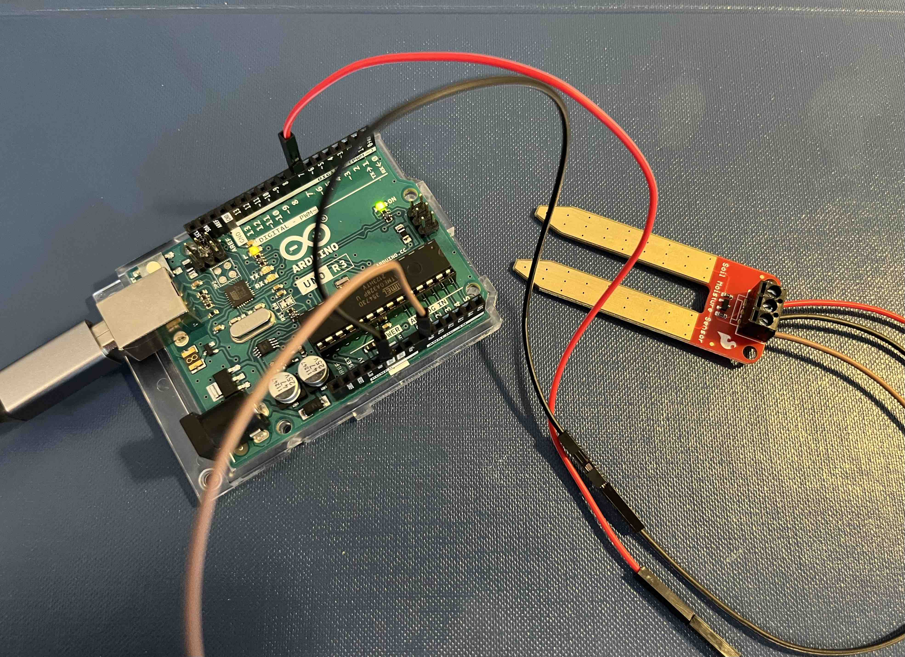
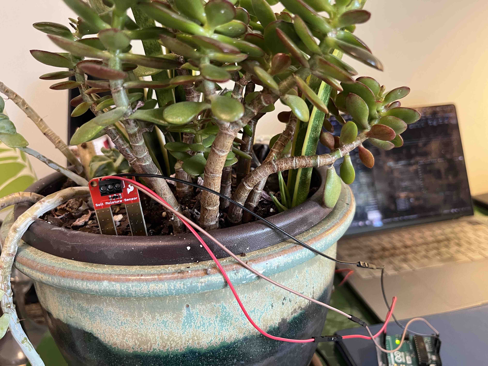
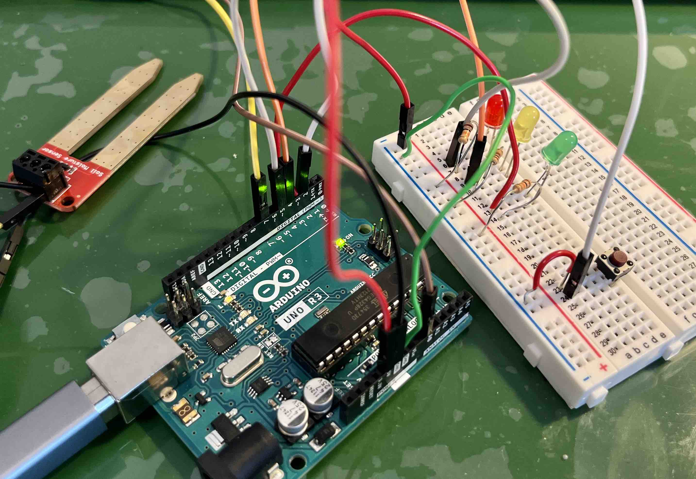
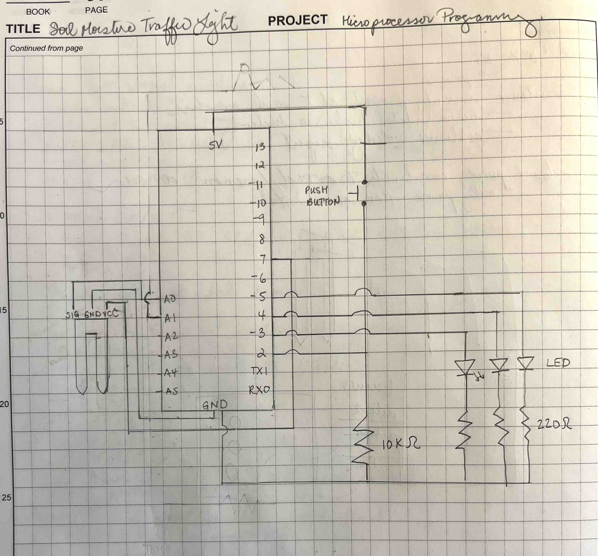
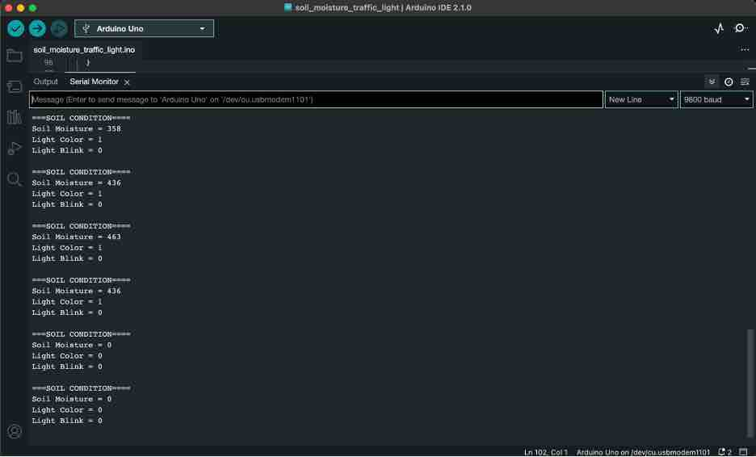

<br>
### Microcontroller Programming
<br>
<h4>Plant Soil Moisture Traffic Light</h4>
I wanted to program a microcontroller to sense the soil moisture of a plant and based on a set of ranges, output if the plant needs water. Since I didn't have an LCD monitor as output, I decided to create a "traffic light" of red, yellow and green lights that are either solid or blinking.
Here are the different signals:
- too dry: red solid light
- dry warning: red blink light
- plant is at right moisture: green
- wet warning: yellow blinking light
- too wet: yellow solid light
An extension of this would be to dispense the appropriate amount of water, but I wanted to focus sensor inputs and outputs of the microcontroller for this exercise.

<figcaption>Besides the Arduino Uno R3 board, I also used the Sparkfun soil moisture sensor (https://www.sparkfun.com/products/13637). I used the tutoria associated with this part to get started (https://learn.sparkfun.com/tutorials/soil-moisture-sensor-hookup-guide?_ga=2.73005718.443370483.1688246978-1205062100.1688246978)</figcaption>
I started with the basic soil moisture Arduino code example, replacing the LCD monitor, because I didn't have one, with 3 led colored (red, yellow, green) lights.

<figcaption>I did a simple test by looking at the values from the analogRead() to get a sense of the ranges. I found that in air it was ~0, whereas if I dipped it into my coffee, the value was ~1000. Given my coffee experiment - seems go from 0 (dry) to totally wet (in my coffee) ~1000</figcaption>
For now, I will set my ranges as constants and go with integers vs floats as 1000 increments of moisture is well enough for even the pickiest of plants I would imagine. In future I could see a plant database calibrated by experts as well as the potential size of the plant to determine not only when a plant needs water, but also how much to dispense. (Note: As I did more experiments I found that the readings changed so I think there is overall a calibration potentially needed at set up. Will need to research this more.)
I adjusted the original SparkFun Electronics sample code so instead of printing the value detected, I printed out: value, color and blick or not.
Here is the code:
<div class="box">
<pre>
<code>
/* Soil Moisture Traffic Light
This sketch was written starting from examples from SparkFun Electronics and the Arduino Projects Book.
Loni Stark
July 1, 2023
Checks soil moisture levels and alerts plant parent with possible 5 values:
- too dry: red solid light
- dry warning: red blink light
- green: plant is at right moisture
- wet warning: yellow blinking light
- too wet: yellow solid light
*/
int val = 0; //value for storing moisture value
int soilPin = A0;//Declare a variable for the soil moisture sensor
int soilPower = 7;//Variable for Soil moisture Power
int lightColor = 1; //Variable for light color: RED = 0, YELLOW = 1, GREEN = 2;
int blink= 0; // Variable for if light will blink. blink = 1, no blink = 0
const int TOO_DRY = 200; //value equal or below is considered too dry
const int WARN_DRY = 300; //value less than or above TOO_DRY is considered a dry warning
const int WARN_WET = 600; //value greater than or below TOO_WET is considered a wet warning
const int TOO_WET = 700; //value equal or greater than is considered too wet.
const int RED = 0;
const int GREEN = 1;
const int YELLOW = 2;
const int ERROR = -1;
//Rather than powering the sensor through the 3.3V or 5V pins, the digital pin 7 will
//be used to power hte sensor. This will prevent corrosion of the sensor as it is in soil.
//The 3.3V power output will be used to power the red, yellow and green lights.
void setup()
{
Serial.begin(9600); // open serial over USB
pinMode(soilPower, OUTPUT);//Set D7 as an OUTPUT
digitalWrite(soilPower, LOW);//Set to LOW so no power is flowing through the sensor
}
void loop()
{
Serial.println("===SOIL CONDITION====");
Serial.print("Soil Moisture = ");
//get soil moisture value from the function below and print it
Serial.println(readSoil());
Serial.print("Light Color = ");
//set color indicator state for soil moisture.
Serial.println(setLightColor());
Serial.print("Light Blink = ");
//set blink indicator state for soil moisture.
Serial.println(setLightBlink());
Serial.println(" ");
//This 2 second timefrme is used so you can test the sensor and see it change in real-time.
//For in-plant applications, you will want to take readings much less frequently.
delay(2000);//take a reading every second
}
//This is a function used to get the soil moisture content
int readSoil()
{
digitalWrite(soilPower, HIGH);//turn D7 "On"
delay(10);//wait 10 milliseconds
val = analogRead(soilPin);//Read the SIG value form sensor
digitalWrite(soilPower, LOW);//turn D7 "Off"
return val;//send current moisture value
}
int setLightBlink () {
//function to set the light color based on soilPin value
if (val <= TOO_DRY){
blink = 0;
}
else if (val <= WARN_DRY){
blink = 1;
}
else if (val <= WARN_WET){
blink = 0;
}
else if (val > WARN_WET){
blink = 1;
}
else if (val > TOO_WET){
blink = 0;
}
else{
blink = ERROR;
}
return blink;
}
int setLightColor () {
//function to set the light color based on soilPin value
if (val <= TOO_DRY){
lightColor = RED;
}
else if (val <= WARN_DRY){
lightColor = RED;
}
else if (val <= WARN_WET){
lightColor = GREEN;
}
else if (val > WARN_WET){
lightColor = YELLOW;
}
else if (val > TOO_WET){
lightColor = YELLOW;
}
else {
lightColor = ERROR;
}
return lightColor;
}
</code>
</pre>
</div>
<iframe class="video" src="https://www.youtube.com/embed/hG8KRsEQEKs" title="YouTube video player" frameborder="0" allow="accelerometer; autoplay; clipboard-write; encrypted-media; gyroscope; picture-in-picture; web-share" allowfullscreen></iframe>
<figcaption>Demo of the test. This version of the code does not have the blink state yet, only three states: too dry, just right, too wet.</figcaption>
Next, I built the circuit and played with the code for the Spaceship Interface to understand how outputs worked so that I could hook up the input from the soil moisture monitor to the output of red, yellow and green LEDs with the state of solid or blinking light to signal each of the states of a plant. I didn't have all the right resisters for the project. In retrospect, could have used a capacitor instead.
I added another variable to save the state of the light color that was turned on and then turn it off if the blink variable was on (equal to 1). In order to test this out, I had to change the constant values for the different moisture levels in order for there to be enough of a range for the blinking to occur. Otherwise, it was challenging to get the blinking to work even if the "blink" flag was on based on the println results.
<div class="box">
<pre>
<code>
const int TOO_DRY = 50; //value equal or below is considered too dry
const int WARN_DRY = 450; //value less than or above TOO_DRY is considered a dry warning
const int WARN_WET = 460; //value greater than or below TOO_WET is considered a wet warning
const int TOO_WET = 900; //value equal or greater than is considered too wet.
const int RED = 0;
const int GREEN = 1;
const int YELLOW = 2;
const int ERROR = -1;
</code>
</pre>
</div>

<figcaption>Set up of the circuit for the traffic light.</figcaption>

<figcaption>Circuit Drawing of Set Up.</figcaption>

<figcaption>Serial print output from Arduino. Good way to help debug issues as well.</figcaption>
<iframe class="video" src="https://www.youtube.com/embed/Y84TnejjYQ0" title="YouTube video player" frameborder="0" allow="accelerometer; autoplay; clipboard-write; encrypted-media; gyroscope; picture-in-picture; web-share" allowfullscreen></iframe>
<figcaption>Demo of the addition of the "blink" state</figcaption>
<a href='./soil_moisture_traffic_light_v2/soil_moisture_traffic_light_v2.ino' class="download"> Download my file</a>
<br>
<h4>Attempt to Add Temperature Sensor</h4>
Next up is using the Love-O-Meter example to see how I can get the temperature sensor hooked up to my plant care monitor.
After going through the example, I modified it to be additive to the circuit that I was building. Instead of connecting the input from the temperature sensor to "A0", I used the next port over, "A1". In addition, unlike the moisture sensor which I wanted to minimize reads to prevent corrosion of the sensor device, I put the sensor before the button so the temperature sensor is always on and sending inputs. I also put in code to warn of too hot or too cold temperatures. I can see how an LCD screen or some other more flexible output device rather than LED lights can come in handy here. Instead of adding another light, I am just going to look at the serial output and later on, hook up a richer output device.
I included a function:
<div class="box">
<pre>
<code>
int readTemp()
{
val = analogRead(tempPin);//Read the SIG value from temp sensor
return val;//send current temp value
}
</code>
</pre>
</div>
The readings I got from it was 1023. I could not find the part information so I will look into it when I have access to the lab again. I am realizing just like a bench for electricity, I almost need one for moisture and temperature to check on the validity of the sensors and my set up! For now I will comment out the call to it in the loop() function.